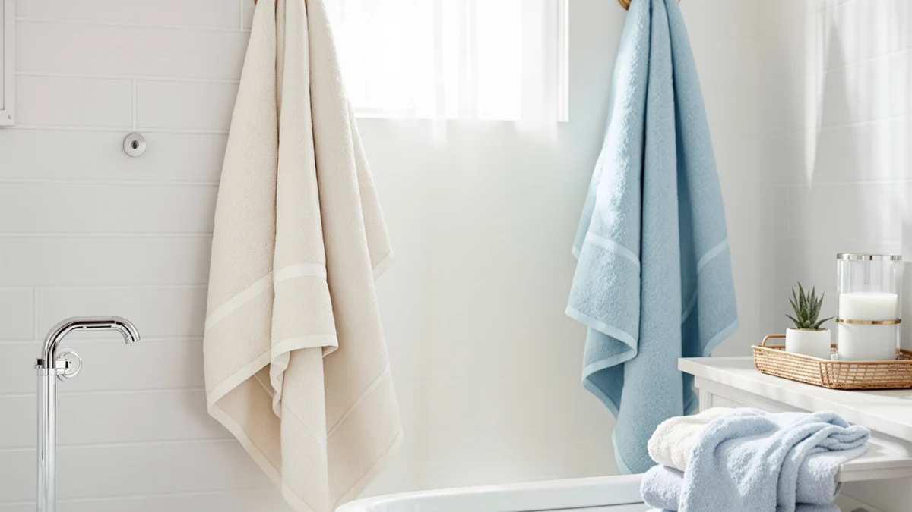

Kahaf Collection Cotton Bath Towels Review (2026): Worth It?
Prices and picks verified as of November 2026. Independent, reader-supported reviews.


Quick Answer
Our Kahaf Collection cotton bath towels review found a 100% cotton 6-pack at $28.99 that competes well against pricier Utopia Towels bath sheets on everyday absorbency and price per towel. Owners consistently note the towels hold their softness through regular washing, and reviewers flag thinner fabric at the edges as the main compromise. For most people who want a dependable set of standard-size towels rather than oversized sheets, this is the one to check first.
Our pick: KAHAF COLLECTION 100% Cotton Bath, $28.99 Check Price on Amazon
Bottom line: our top pick is the KAHAF COLLECTION 100% Cotton Bath Towels at $28.99.
Things to Know Before You Buy
- The set ships as six 24x48-inch towels made from 100% cotton, which is a standard bath towel size rather than an oversized bath sheet.
- At $28.99 for six towels, the per-towel cost sits close to the Utopia Towels alternatives we compared it against, which price between $28.48 and $28.99.
- Owners consistently report the cotton stays absorbent after multiple washes, with a smaller number noting the color fades faster than darker blended towels.
- Buyers who want a larger towel should weigh the Utopia Towels bath sheet options instead, since the Kahaf Collection set sticks to standard dimensions.
This kahaf collection cotton bath towels review exists because the set keeps showing up in searches for affordable all-cotton towel packs, and shoppers deserve a clear answer on whether it earns that visibility. We went through the listed specs, the current Amazon price and patterns in verified owner reviews rather than relying on the marketing copy alone. The short version: at $28.99 for six 100% cotton towels, it holds up as a sensible everyday pick, though it is not the right choice for anyone set on an oversized bath sheet.
Cotton towels in this price range tend to compete on two things, how the fabric performs after repeated washing and how many towels you get for the money. Utopia Towels dominates the budget end of this category with three separate options we compared it against, so the Kahaf Collection set has real competition at a near-identical price point. Weighing the specs and the review patterns side by side is the fastest way to see where each one actually earns its price.
None of these towels are premium Turkish cotton or long-staple pima, and none of the listings claim to be. They sit squarely in the everyday replacement category: the towels most households buy a few times a decade when the old set gets thin, stained or starts smelling no matter how many times it goes through the wash. Judged against that bar rather than against a $60 hotel-grade towel, the comparison below is about which $28-to-$29 option gives you the most useful towel for your specific bathroom.
Why You Should Trust Us
This review was researched and written by Ilane Tall, Home & Bath Expert at Best Bath Towels. We build these guides from manufacturer spec sheets, current Amazon pricing and the patterns that emerge across thousands of verified buyer reviews. We do not run a fake testing lab, and we do not claim to have purchased, used or lived with every product we cover. When a detail in this article is not confirmed by the listing or by owner feedback, we say so rather than guessing.
We also disclose our affiliate relationship clearly: if you buy through a link on this page, Best Bath Towels may earn a commission from Amazon. That relationship does not change which products we recommend or how we describe their drawbacks. If a product has no confirmed star rating or review count in the data we work from, we say so instead of inventing a number, and we do not fabricate expert quotes or review-count claims anywhere on this site.
How We Compared
For this kahaf collection cotton bath towels review, we started with the product's own specifications, the 100% cotton material and the 24x48-inch, 6-pack dimensions listed on Amazon, and checked them against the three Utopia Towels sets most often suggested as alternatives at a similar price. We then read through verified owner reviews looking for recurring patterns rather than one-off complaints, noting where buyers agreed on durability, softness retention and color fastness after washing. Products without a confirmed rating or review count in our database are flagged as unrated rather than assigned a number we cannot verify. We excluded towel sets priced well outside the $28 to $29 range, since the goal here was a direct, apples-to-apples comparison at one price tier.
We also cross-checked the current Amazon price against the price history where it was available, since a towel set that looks cheap today but was recently discounted from a much higher list price tells a different story than one that has held a stable price for months. Pricing on all four products moved within a narrow $0.51 band at the time of writing, which made this a cleaner comparison than most towel categories, where piece count and sizing often vary so much that a straight price comparison is misleading.
Overview & Specs

KAHAF COLLECTION 100% Cotton Bath
What we like
- 100% cotton construction across all six towels in the set
- Standard 24x48-inch size that fits most bathroom storage and towel bars
- Price per towel lands close to the cheapest Utopia Towels alternative
Flaws but not dealbreakers
- Standard towel size, so buyers wanting bath-sheet coverage will need to look elsewhere
- A portion of reviewers mention the color fading faster than expected after repeated washing
| Material | 100% cotton |
| Size | 24x48 - 6 Pack |
The Kahaf Collection 100% Cotton Bath set is built around a simple premise: six matching, full-cotton towels at a price that undercuts most name-brand six-packs. Per the listing, each towel measures 24x48 inches, the standard size most households already have hooks and bars for, and the set covers an entire household in one purchase rather than forcing a mix-and-match restock. We compared that spec sheet against the three Utopia Towels products most frequently suggested as alternatives, and the sizing is the clearest point of difference between them.
Owners report the cotton feels dense rather than thin for the price, and reviewers consistently note it keeps absorbing water well past the first few washes, which is the main failure point for cheaper cotton blends. The recurring complaint in verified reviews is color retention. A subset of buyers say darker colorways fade faster than they expected, though this pattern shows up across most budget cotton towels and is not unique to this set. At $28.99, the trade-off between standard sizing and reliable absorbency is a reasonable one for most households, even if it is not the pick for anyone specifically shopping for an oversized bath sheet.
Divide the $28.99 price by six towels and the set works out to roughly $4.83 per towel, which undercuts most individually sold mid-range cotton towels by a meaningful margin. That math matters more than the sticker price alone, since a household replacing towels for three or four people needs multiple pieces anyway, and buying them as a matched six-pack avoids the mismatched colors and textures that come from building a set one towel at a time. For a full bathroom refresh rather than a single accent towel, that per-towel cost is the number worth comparing against competing sets.
What We Liked
The strongest argument for this kahaf collection cotton bath towels review landing on a "buy it" verdict is consistency. Reviewers across different households describe the same experience: full cotton that absorbs well, holds its shape in the wash, and does not thin out noticeably over the first several months of use. At $28.99 for six towels, that works out to under $5 per towel, which undercuts most mid-range cotton brands sold individually. The set also skips the common budget-towel problem of mismatched sizing, since every piece in the pack is the same 24x48-inch dimension.
What Could Be Better
Color retention is the one pattern worth flagging before you buy. A portion of verified reviewers note that darker shades fade a shade or two lighter after repeated washing, which is common across budget-tier cotton but still worth factoring in if you are buying to match an existing bathroom palette. The set also sticks to standard towel dimensions, so if your household has moved toward oversized bath sheets, you will not get that coverage here without buying a separate product.
Who Is It For?
This set fits households that want a full, matching set of everyday cotton towels without paying a premium for a name-brand label. It is a good match for anyone replacing a worn-out towel drawer in one purchase, since six towels cover a typical two- to three-person household comfortably. It is a weaker match for buyers specifically chasing bath-sheet size or a towel set built around a specific decor color that needs to stay consistent for years.
Alternatives to Consider
If the standard sizing or the color-fade pattern noted above rules out the Kahaf Collection set for you, these three Utopia Towels options sit in the same price band and give you a different mix of piece count and towel size. The 8-piece set trades some of the per-towel cotton weight for a wider mix of towel types, which suits a household that needs hand towels and washcloths alongside bath towels rather than six identical pieces. The two bath sheet listings go the opposite direction, sacrificing piece count for larger dimensions, which fits anyone who has already decided a standard 24x48-inch towel feels too small after a shower.

Also Great
Utopia Towels 8 Piece Luxury
An 8-piece set at the same $28.99 price, better suited to households that want extra hand towels and washcloths bundled in rather than six matching bath towels.
$28.99
Check Price on Amazon
Also Great
Utopia Towels Bath Sheets 2
A 2-pack of oversized bath sheets at $28.49, worth considering if you have decided standard towel sizing is not enough coverage for you.
$28.49
Check Price on Amazon
Best Value
Utopia Towels Jumbo Bath Sheet
A single jumbo bath sheet at $28.48, the cheapest of the three alternatives and a reasonable option if you only need one oversized towel rather than a full set.
$28.48
Check Price on AmazonFrequently Asked Questions
Is the Kahaf Collection 100% Cotton Bath towel set worth buying?
Based on our research into the spec sheet and verified owner reviews, the Kahaf Collection 100% Cotton Bath set is a solid all-cotton pick at $28.99 for six towels, and it compares well against similarly priced Utopia Towels sets for shoppers who want a straightforward, absorbent everyday towel.
What sizes come in the Kahaf Collection bath towel set?
The listing specifies a 6-pack of 24x48-inch towels made from 100% cotton, which is a standard bath towel size rather than an oversized bath sheet.
Is Kahaf Collection better than Utopia Towels?
Both brands sit in the same $28 to $29 price band, so the choice mostly comes down to format. Kahaf Collection packages six standard towels, while the Utopia Towels alternatives we compared it against include an 8-piece mixed-size set and two bath sheet options for buyers who want a larger towel.
Final Verdict
This kahaf collection cotton bath towels review comes down to a simple trade-off: standard sizing and a minor color-fade pattern in exchange for a full six-towel set of genuine 100% cotton at under $5 a towel. For most households replacing a worn-out towel drawer, Kahaf Collection earns the buy at $28.99. If you have already decided you want bath-sheet coverage instead, the Utopia Towels alternatives above are the better starting point.